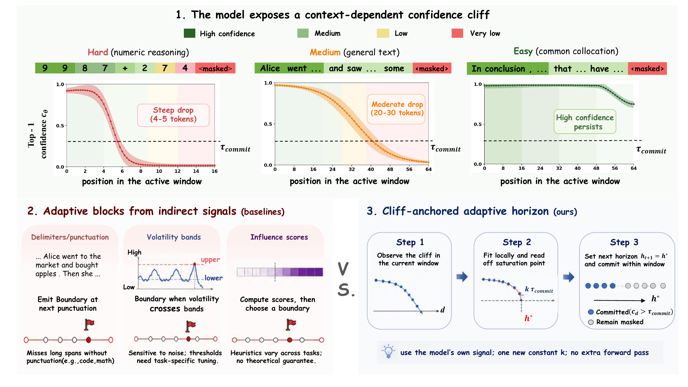
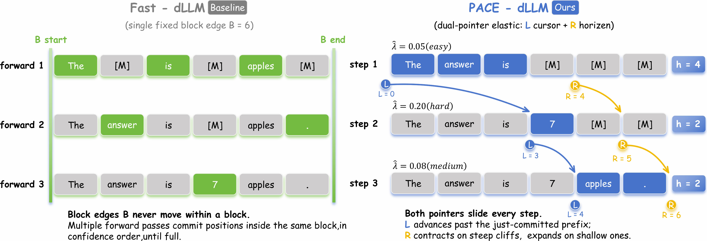
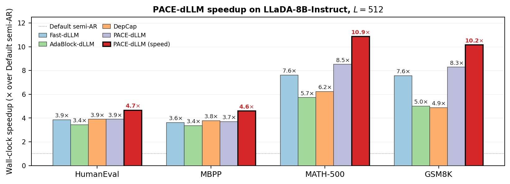
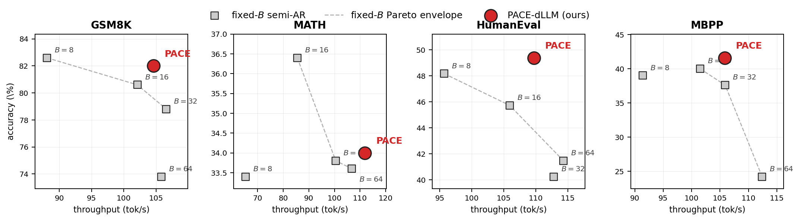
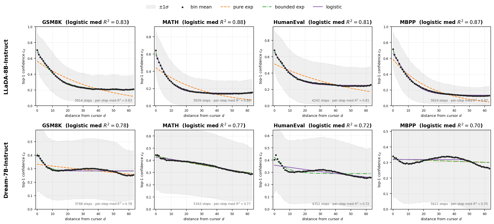
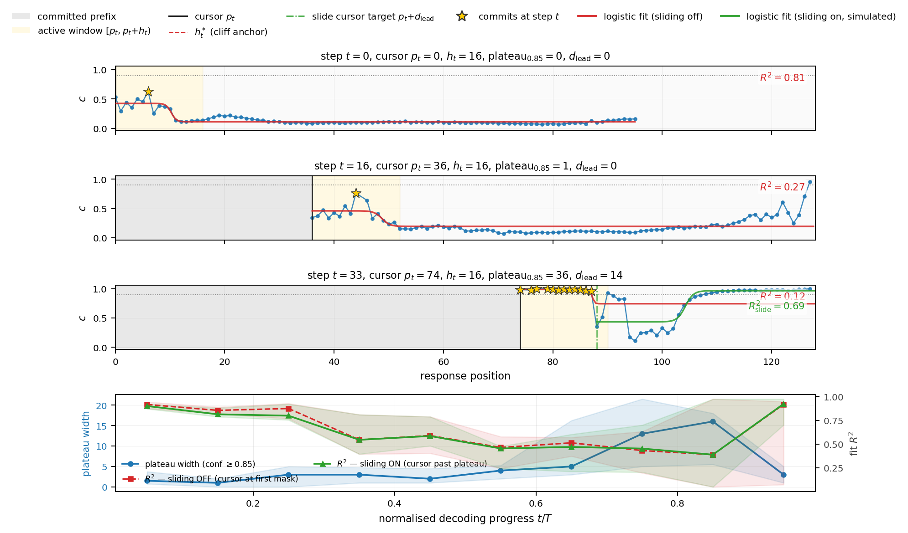
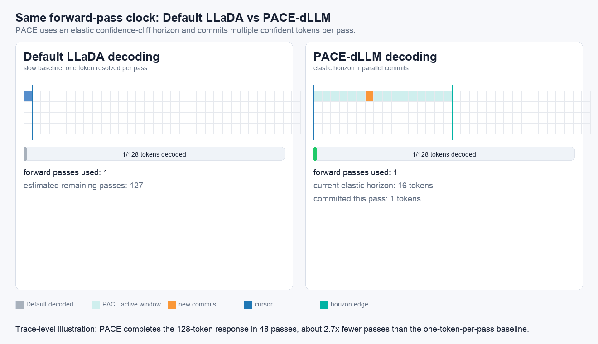

PACE-dLLM: Elastic Block Decoding via Confidence Cliff Estimation
The Hong Kong University of Science and Technology
A training-free inference decoder that reads a diffusion language model's reliable look-ahead horizon from its own confidence cliff, then commits tokens with a separate confidence rule.
Abstract
Diffusion language models (dLLMs), such as LLaDA and Dream, have become competitive with autoregressive (AR) LLMs in generation quality while supporting native parallel decoding. A standard acceleration strategy is block-wise decoding, where each forward pass predicts a block of length B and commits high-confidence tokens. However, B couples two distinct decisions: the look-ahead horizon and the number of tokens to commit. Existing accelerators address this limitation through indirect heuristics, such as volatility tracking, delimiter detection, and learned scoring. In contrast, we show that the required information is already encoded in the model's own per-step confidence: in-window confidence typically follows a context-dependent cliff, whose saturation point directly identifies the appropriate look-ahead horizon. In this work, we propose PACE-dLLM, which fits this parametric cliff in closed form at each step, sets the next horizon by its saturation point, and uses an independent confidence threshold for token commitment. Under a saturated-yield abstraction, we show that the cliff-anchored horizon is the smallest horizon attaining maximal useful per-pass yield, improving the asymptotic NFE rate when fixed blocks undershoot the cliff and avoiding wasted attention when they overshoot it. On four reasoning and code benchmarks across two open-source dLLM backbones, PACE-dLLM achieves the best average accuracy on both backbones, with up to 5.2x wall-clock speedup over the unaccelerated semi-AR baseline, advancing the quality-throughput Pareto frontier.
Key Results
Method Overview

Figure 1. First-pass confidence exposes a context-dependent cliff. PACE-dLLM fits this cliff and anchors the next horizon at its saturation point, using no auxiliary model and no extra forward pass.

Figure 2. Fast-dLLM ties the block edge and commit boundary to a fixed block. PACE-dLLM decouples the cursor and horizon, contracting on steep cliffs and expanding on shallow cliffs.
Why This Works
Confidence Cliff
Top-1 confidence inside the active diffusion window forms a plateau-transition-floor structure. The fitted saturation point tells the decoder how far it is useful to look ahead.
Dual Boundary
The horizon decides where to predict; the commit threshold decides what to lock in. This removes the single fixed block size from doing both jobs.
Closed-Form Update
PACE fits a four-parameter logistic in O(|W|) scalar operations and refreshes the horizon every K=4 passes in the production setting.
Main Results
| Benchmark | Default | Fast-dLLM | AdaBlock-dLLM | DepCap | PACE-dLLM |
|---|---|---|---|---|---|
| LLaDA-8B-Instruct, L=512 | |||||
| GSM8K | 78.4 12.7 tok/s, 1.0x | 82.00 96.0, 7.56x | 82.6 63.6, 5.01x | 80.1 62.0, 4.88x | 82.00 105.2, 8.28x |
| MATH-500 | 34.0 12.9, 1.0x | 33.80 98.3, 7.62x | 34.2 73.8, 5.72x | 31.8 80.5, 6.24x | 34.00 109.9, 8.52x |
| HumanEval | 43.3 28.4, 1.0x | 40.24 109.4, 3.85x | 44.5 97.6, 3.44x | 43.6 110.5, 3.89x | 49.39 110.7, 3.90x |
| MBPP | 38.6 28.5, 1.0x | 37.60 103.1, 3.62x | 37.4 95.9, 3.36x | 37.8 107.7, 3.78x | 41.60 105.5, 3.70x |
| Average | 48.58 20.6, 1.0x | 48.41 101.7, 4.94x | 49.68 82.7, 4.01x | 48.33 90.2, 4.38x | 51.75 107.8, 5.23x |
| Dream-7B-Instruct, L=512 | |||||
| GSM8K | 78.62 24.6, 1.0x | 78.54 78.2, 3.18x | 78.62 77.2, 3.14x | 80.14 50.3, 2.05x | 80.06 70.1, 2.85x |
| MATH-500 | 42.60 26.4, 1.0x | 40.40 120.4, 4.56x | 40.40 116.4, 4.41x | 42.60 71.5, 2.71x | 43.40 99.1, 3.75x |
| HumanEval | 58.54 39.8, 1.0x | 59.76 78.0, 1.96x | 59.15 78.1, 1.96x | 55.49 76.1, 1.91x | 61.00 72.4, 1.82x |
| MBPP | 53.40 26.6, 1.0x | 53.40 137.9, 5.18x | 53.40 125.4, 4.71x | 56.20 100.7, 3.79x | 56.00 117.1, 4.40x |
| Average | 58.29 29.4, 1.0x | 58.03 103.6, 3.53x | 57.89 99.3, 3.38x | 58.61 74.7, 2.54x | 60.12 89.7, 3.06x |
Each cell shows accuracy on the first line and throughput with speedup over Default on the second line. Results follow the latest NeurIPS 2026 draft Table 1.
Throughput and Pareto Frontier

Figure 4. On LLaDA-8B-Instruct, production PACE-dLLM is the fastest accelerator on GSM8K, MATH-500, and HumanEval; the speed setting reaches 10.2x on GSM8K and 10.9x on MATH-500.

Figure 5. PACE-dLLM lies on the upper-right accuracy-throughput frontier compared with fixed-B Fast-dLLM sweeps, using one hyperparameter set across benchmarks.
Analysis and Ablations

Figure 3. Active-window confidence decay on LLaDA-8B-Instruct across GSM8K, MATH, HumanEval, and MBPP. Logistic fits capture the plateau-transition-floor cliff with median R2 from 0.81 to 0.88.
Component Ablation
- Full PACE-dLLM: 51.75 accuracy, 107.8 tok/s on LLaDA average.
- Removing the cliff anchor collapses to fixed-block Fast-dLLM: 48.41 accuracy, 101.7 tok/s.
- Removing cursor sliding costs about 1.9 accuracy points at near-flat throughput.
- Boundary-aware commits add a small late-decoding/EOS-region accuracy gain.
Hyperparameter Sweeps
- Anchor cT in [0.40, 0.50] is stable; cT=0.50 is used as the global default.
- Refit interval K=4 gives the best average accuracy while keeping OLS overhead low.
- Production horizons use [16,64] for math/reasoning and [24,36] for code.

Figure 6. As decoding progresses, the confidence plateau widens; cursor sliding restores the logistic fit by anchoring at the current unresolved frontier.

Figure 7. Side-by-side decoding animation under the same forward-pass clock. Default LLaDA advances slowly, while PACE-dLLM moves an elastic horizon, commits multiple confident tokens per pass, and finishes the 128-token trace in 48 passes.
BibTeX
@article{lu2026pacedllm,
title={PACE-dLLM: Elastic Block Decoding via Confidence Cliff Estimation for Diffusion Language Models},
author={Lu, Xiaocheng},
year={2026},
note={Manuscript}
}